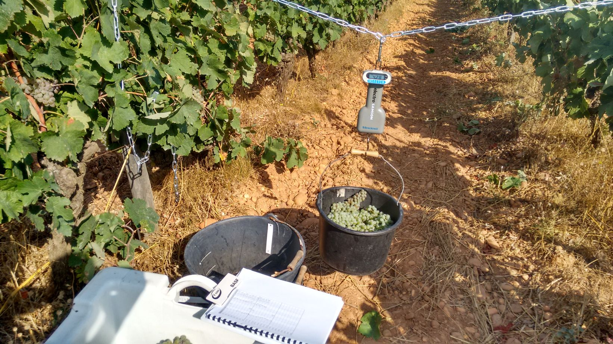

Composantes du rendement à la récolte
Objectif
L’objectif est d’évaluer les différentes composantes du rendement à la récolte. La mesure de ces composantes est essentielle pour l’évaluation des performances technico-économiques des itinéraires (rendement et qualité des raisins produits). Le niveau de rendement impacte la physiologie de la plante et peut potentiellement avoir des conséquences sur plusieurs saisons.
Principe de la mesure
La méthode consiste à compter et peser l’ensemble des grappes à la récolte. La mesure se fait de préférence cep par cep, mais peut aussi s’envisager sur une série de ceps (placette).

Sur le terrain
Échantillonnage
Nombre d’observations
Pour l’estimation du rendement, la récolte de 30 à 40 ceps est préconisée. Dans un essai avec 3 à 4 répétitions, 10 ceps par répétitions sont ainsi généralement suffisant pour bien appréhender les différences entre modalités.
Choix des ceps à observer
- Prendre des ceps représentatifs de la parcelle (ou les ceps qui sont observés par ailleurs)
- Exclure de la mesure les ceps malades et les ceps voisins des manquants.
- Ne pas mesurer les ceps en bordure de rangs.
Mesure
Réalisation
Prévoir une dizaine de sceau préalablement numérotés et pesées à vide (tare). Dans le cas d’un suivi pluriannuel, les ceps doivent être identifiés pour suivre l’évolution des rendements.
- Compter les grappes sur chaque cep.
- Positionner au pied de chaque cep un sceau numéroté
- Vendanger cep par cep
- Procéder à la pesée
Pour mesurer le poids des baies, une des composantes du rendement, un prélèvement de baies pourra précéder la pesée de récolte. Voir la fiche Suivi maturité.
Outils
Prévoir balance de terrain, vendangettes et éventuellement des gants de protection. Attention aux coupures, en particulier pour les personnes non entraînées.
Période de mesure
A la récolte, dans la pratique quelques jours avant la vendange de la parcelle par le viticulteur.
Aspects pratiques
Penser à se coordonner avec le viticulteur pour gérer les raisins après pesées.
Traitement des résultats
Définition des variables
La date calendaire de récolte HARVEST_DATE, ou exprimée en jour de l’année HARVEST_DOY.
Expression par cep
Les variables suivantes peuvent être définies :
le poids total de récolte par cep, exprimé en kg/cep (YIELD_PLANT)
le nombre total de grappes par cep (NB_CLUST_PLANT).
Expression par m²
L’expression par m² de sol permet les comparaisons entre parcelles quand les densités de plantation sont différentes.
La densité de plantation (NB_PLANT_M2) est exprimée en nombre de plantes par m² (nombre de cep par ha divisé par 10 000).
- Le poids de récolte peut être exprimé en kg/m² de sol (YIELD_M21) en prenant en compte la densité de plantation.
\[ YIELD\_M2 = YIELD\_PLANT * NB\_PLANT\_M2 \]
- Le nombre de grappes peut aussi être exprimé par m² de sol (NB_CLUST_M2) en prenant en compte la densité de plantation.
\[ NB\_CLUST\_M2 = NB\_CLUST\_PLANT * NB\_PLANT\_M2 \]
Autres composantes du rendement
Un poids moyen de grappe (SCLUST_W_G) exprimé en grammes peut être calculé en divisant le poids total de récolte par le nombre de grappes.
Si un prélèvement de baies est réalisé il est aussi possible de calculer le poids moyen unitaire d’une baie (SBER_W_g), exprimé en grammes. Voir la fiche Suivi maturité.
Interprétation des résultats
De nombreux facteurs peuvent impacter le rendement de la vigne : itinéraire technique, accidents climatiques (gel, grêle…) ou physiologiques (coulure, millerandage…), dégâts de maladie ou ravageurs… L’interprétation des résultats se fait par rapport aux objectifs de production fixés (quantitatifs et qualitatifs) et par comparaison entre modalités de l’essai. Plusieurs années sont souvent nécessaires pour appréhender la stabilité et le niveau moyen de rendement sur la modalité ou la parcelle.
L’indice Ravaz IR est un indicateur d’équilibre physiologique de la vigne, calculé comme le rapport du rendement à la récolte sur le poids de la taille (exprimé dans la même unité). Néanmoins les seuils d’interprétation de l’indice de Ravaz peuvent être variables selon les auteurs [1].
\[ IR = \frac{YIELD\_PLANT}{PRUN\_FW\_PLANT} \]
Compléments d’information
Ressources complémentaires
Fiche sur l’estimation de rendement à la parcelle par Techniloire
Outil d’estimation à la parcelle de l’IFV Occitanie
Références
Notes de bas de page
Cette variable n’est pas encore déclarée dans la Vitis Ontology↩︎